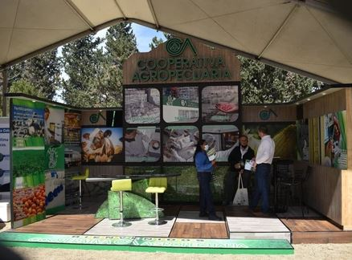
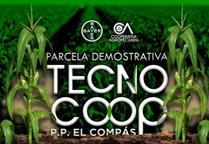

Cooperativa agropecuaria
Hormiguero 2022
Te presentamos nuestra Parcela demo H2022, en la cual mostramos los rendimientos de nuestros híbridos de maíz
0 visualizaciones
0 comentarios

Cooperativa agropecuaria
Expo Nogal Parras 2023
Participación en el Evento de Expo Nogal 2022 llevado a cabo en Parras de la fuente.
0 visualizaciones
0 comentarios
